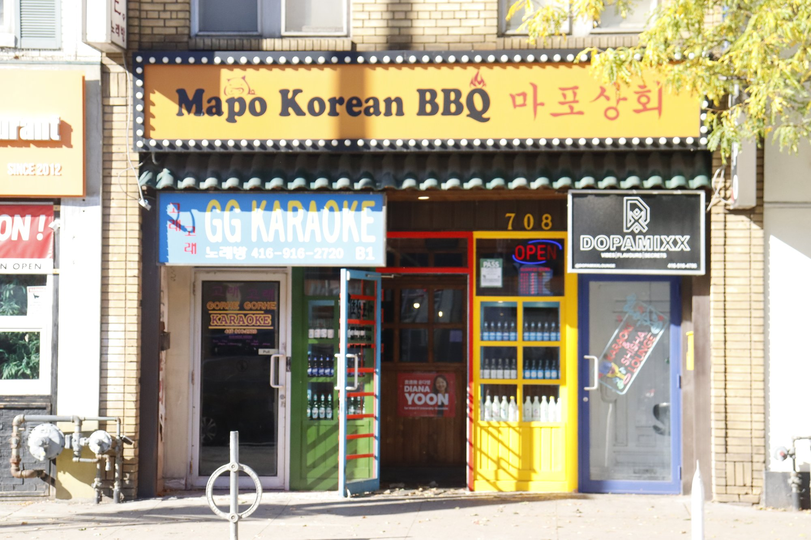
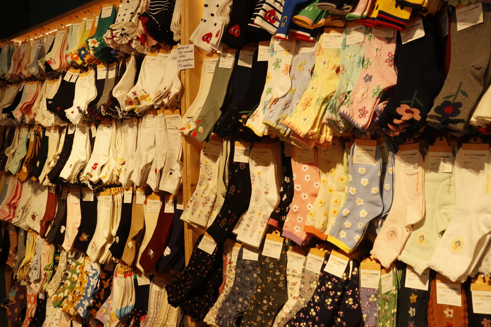
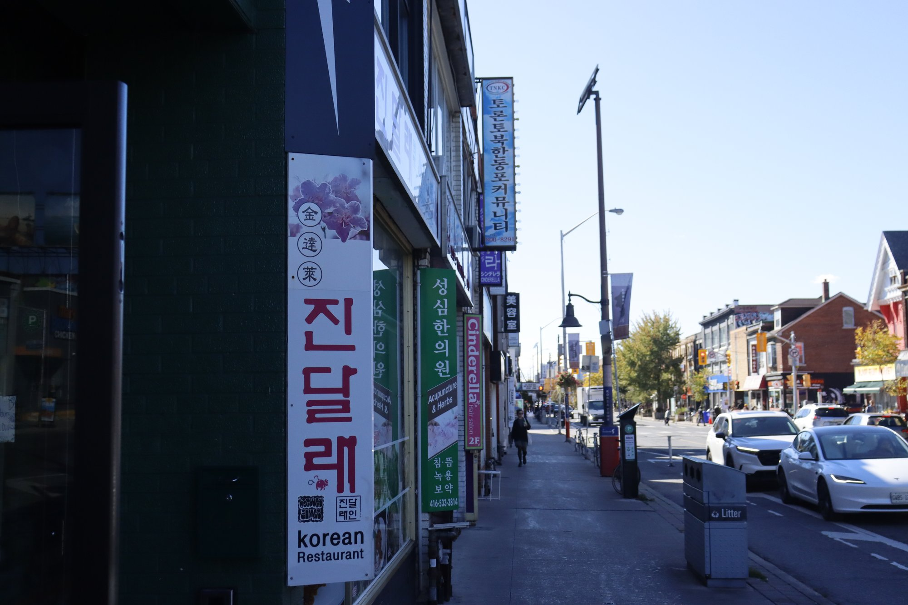
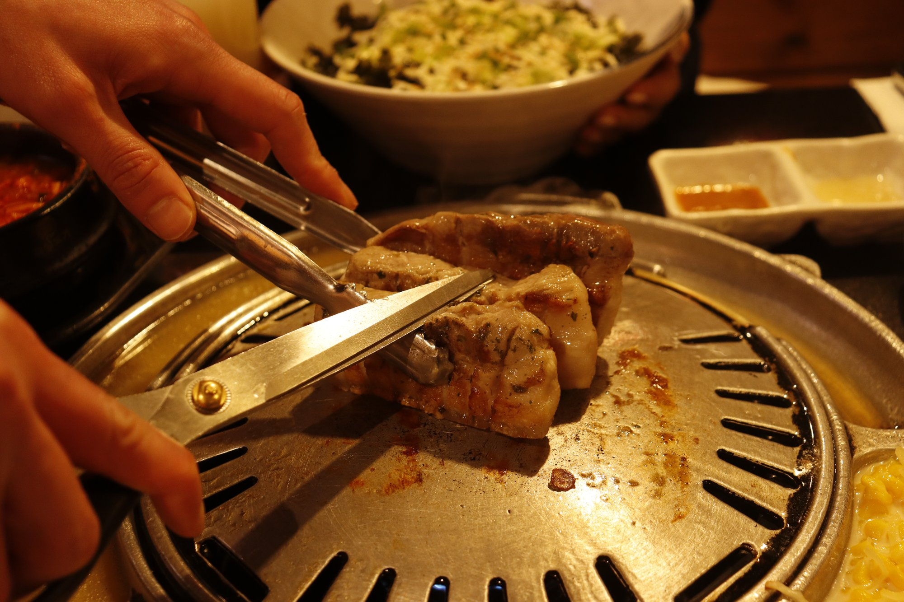

About the project
This documentary photography project records my visit to Koreatown in Toronto. Through six photographs, I wanted to show the area's scenery and everyday surroundings. The series brings together the places and details that caught my attention during the walk.
My approach
My goal was to observe and record the neighbourhood as I experienced it. I photographed what I noticed along the way, then selected six images to present together. Each photograph shows a small part of the visit.
Photo series

Koreatown 01
Koreatown 02

Koreatown 03
Koreatown 04

Koreatown 05

Koreatown 06
Reflection
This project encouraged me to pay closer attention to my surroundings. Together, the six photographs form a simple visual record of my walk through Koreatown.
Back to home